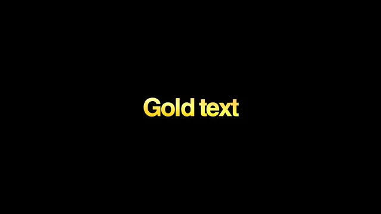

PREMIERE PRO İÇİN YENİ NESİL KURGU PANELİ
PREMIERE’DEN
ÇIKMADAN
KURGULA.
Altyazı. Kesim. Zoom. Animasyon. SFX.
Tek panelde, tek akışta.
00:12
Şimdi asıl hikâyeye geçiyoruz.
00:15
Boşlukları bul, ritmi koru.
EDİTİ BÖLEN ARAÇLAR
ARTIK
TEK YERDE.
Yerel AI seçeneği: ses dosyan bilgisayarından çıkmaz.
KONTROL SENDE
BOŞLUĞU KES.
HİKÂYEYİ BIRAK.
SESSİZLİK
DOLGU
0102030405
KEYFRAME ÇİZMEK YERİNE
HAREKETİ
TEK TIKLA VER.
100%SUFLO
→
112%SUFLO
Preset uygulandı deyip geçmez: anahtarları gerçekten timeline’a yazar ve doğrular.
HER EDİTÖRÜN ARADIĞI ŞEY
BİR KÜTÜPHANE DEĞİL.
EDİT CEPHANELİĞİ.




↻Bir kez kur. Yeni içerik geldiğinde yalnız değişen dosyalar insin.
SUFLO SMOOTH EDITING PACK
PREMIERE’E
YENİ HAREKET DİLİ.
1×dosyayı içe aktar
→∞Premiere’de kalıcı kullan
Suflo paketi otomatik indirir, dosyayı gösterir ve gerçek Premiere import adımlarını açar.
SUFLO SUFLO SUFLO
OKUNMAK İÇİN DEĞİL, HATIRLANMAK İÇİN
SIRADAN ALTYAZI DEĞİL.
BİR STİL SEÇ.
10tanınır stil · gerçek panel önizlemesi · kilitli Pro vitrini
ABONELİK YOK. KREDİ YOK.
BİR KERE AL.
HER EDİTTE HIZLAN.
749TLtek sefer
✓ 3 bilgisayarda kullanım
✓ 14 gün iade güvencesi
✓ Pro içerik bulutu + güncellemeler
✓ Premiere 2020+ · Windows / macOS
HEMEN İNCELEsuflo.app/pro→
Ücretsiz Suflo sürümü devam eder. Pro, hızlandırıcı araçları ve içerik kütüphanesini açar.